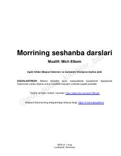

MSProfessor va talabaning hayot mazmuni haqidagi taʼsirli va falsafiy suhbatlari.
Muallif oʻzining sobiq professori Morri Shvars bilan hayotining soʻnggi oylarida oʻtkazgan suhbatlari haqida hikoya qiladi. Kitobda sevgi, oila, kechirimlilik va oʻlim kabi insoniy qadriyatlar chuqur falsafiy nuqtai nazardan tahlil qilinadi.